The directory workdir/validation contains the script runComparisons.sh that can be run to compare various experimental measurements (obtained from the EXFOR database) with the calculations from Activia for a range of target materials and activation products:
sh runComparisons.sh
Before this can be run, the analysis program needs to be built, which requires ROOT:
make
The comparison creates a series of plots in the workdir/validation/pngFiles directory.
Note that some of the comparisons require the MENDL-2 data files to be present in workdir/MENDL (specifically the last four examples in runComparisons.sh); see workdir/MENDL/README.md.
Below are the reference plots. Many of the specific references for the measurements can be looked up in the bibliography section of the Activia paper.
Cross-section plots for protons on a natural copper target

Cross-section of Co-56 produced by protons on a natural Cu target
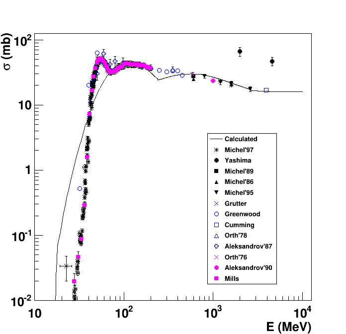
Cross-section of Co-57 produced by protons on a natural Cu target

Cross-section of Co-58 produced by protons on a natural Cu target

Cross-section of Co-60 produced by protons on a natural Cu target

Cross-section of Co-60 produced by protons on a natural Cu target with MENDL-2 data tables

Cross-section of Fe-59 produced by protons on a natural Cu target
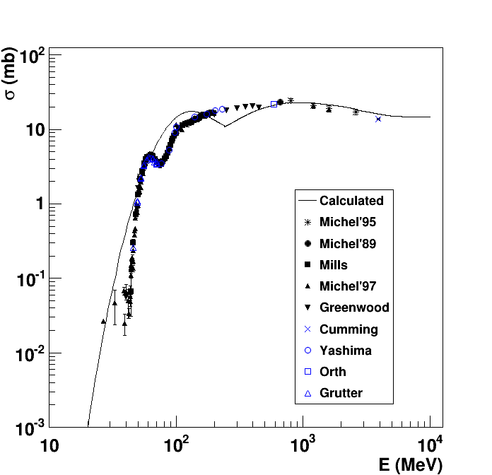
Cross-section of Mn-54 produced by protons on a natural Cu target

Cross-section of Sc-46 produced by protons on a natural Cu target
Cross-section of Zn-65 produced by protons on a natural Cu target
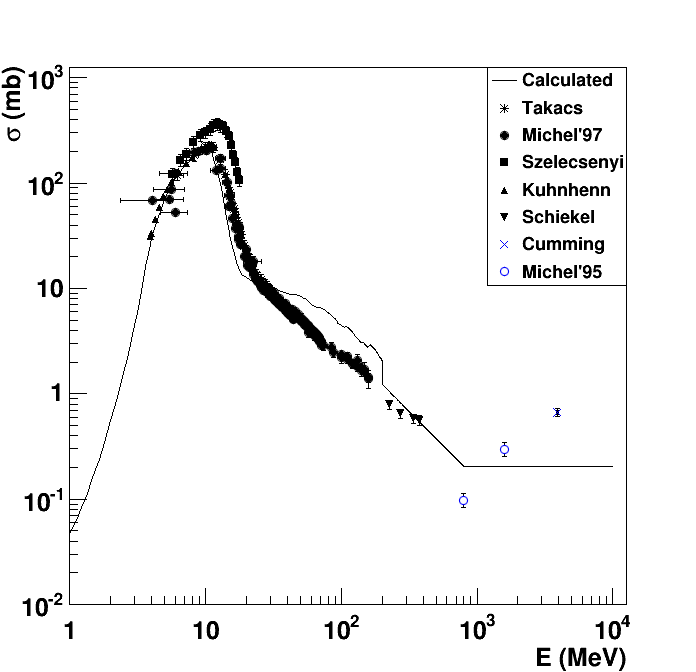
Cross-section of Zn-65 produced by protons on a natural Cu target with MENDL-2 data tables
Cross-section plots for protons on a natural germanium target

Cross-section of Co-56 produced by protons on a natural Ge target
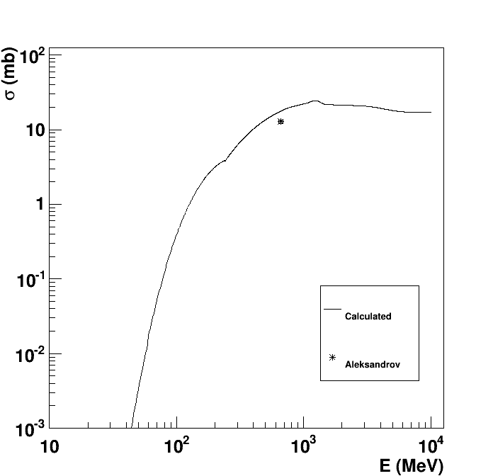
Cross-section of Co-57 produced by protons on a natural Ge target
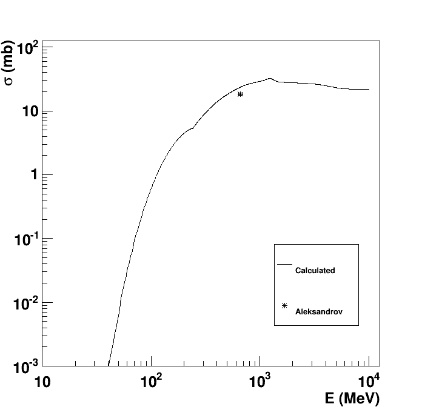
Cross-section of Co-58 produced by protons on a natural Ge target

Cross-section of Co-60 produced by protons on a natural Ge target
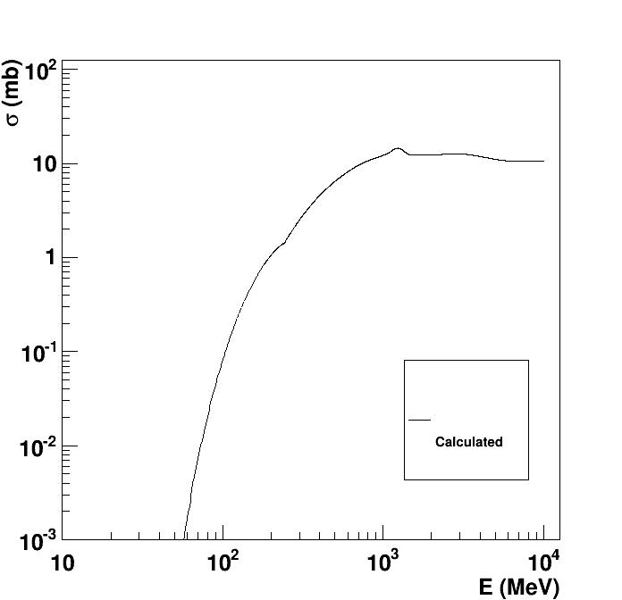
Cross-section of Fe-55 produced by protons on a natural Ge target
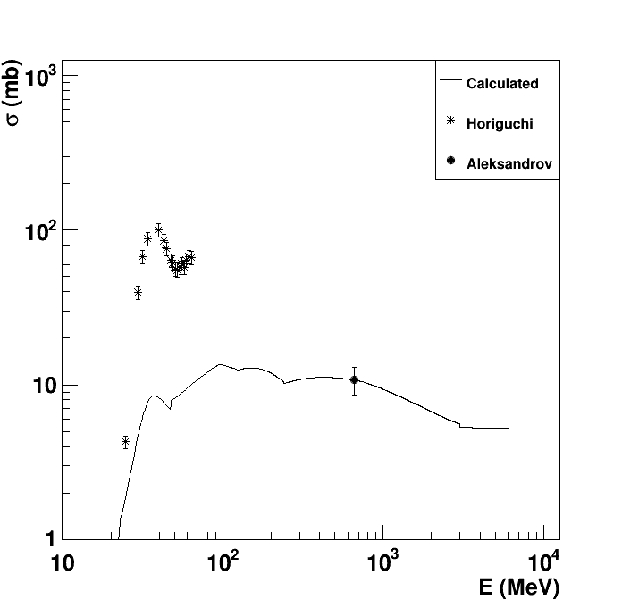
Cross-section of Ge-68 produced by protons on a natural Ge target
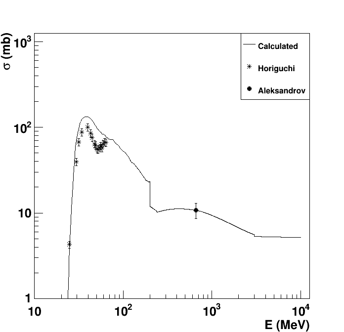
Cross-section of Ge-68 produced by protons on a natural Ge target with MENDL-2 data tables

Cross-section of Mn-54 produced by protons on a natural Ge target
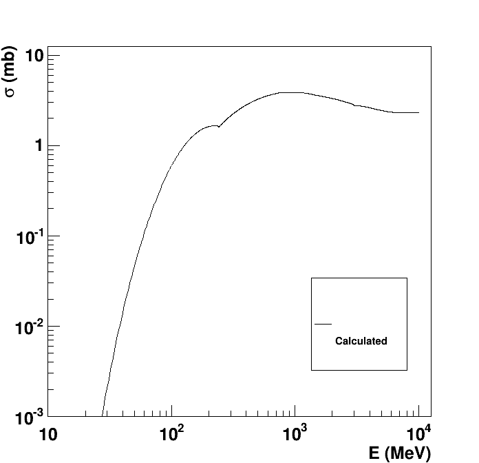
Cross-section of Ni-63 produced by protons on a natural Ge target

Cross-section of Zn-65 produced by protons on a natural Ge target
Cross-section plots for protons on a natural tellurium target
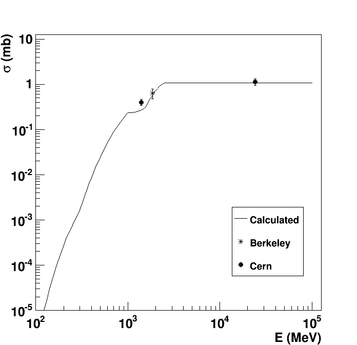
Cross-section of Co-60 produced by protons on a natural Te target
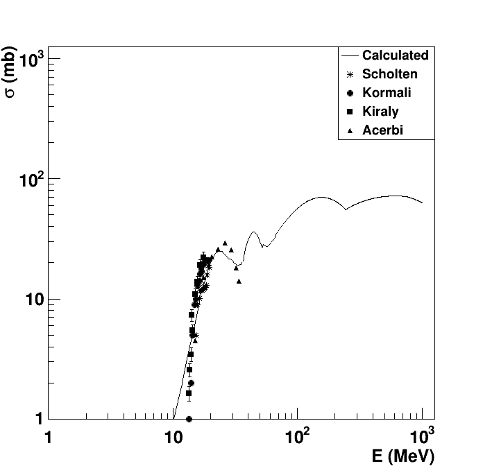
Cross-section of I-121 produced by protons on a natural Te target

Cross-section of I-123 produced by protons on a natural Te target
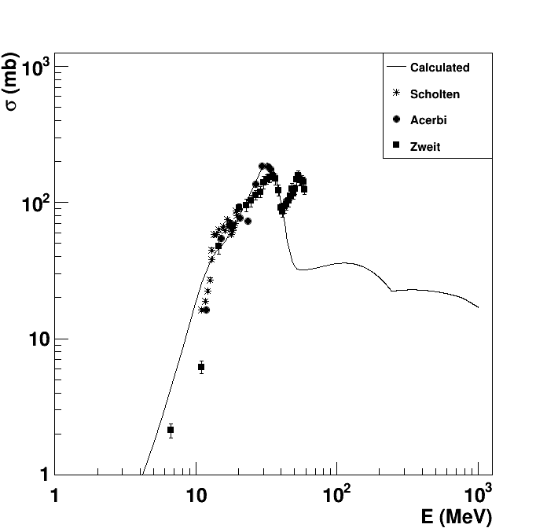
Cross-section of I-124 produced by protons on a natural Te target

Cross-section of I-125 produced by protons on a natural Te target

Cross-section of I-126 produced by protons on a natural Te target

Cross-section of I-128 produced by protons on a natural Te target

Cross-section of I-128 produced by protons on a natural Te target

Cross-section of I-130 produced by protons on a natural Te target
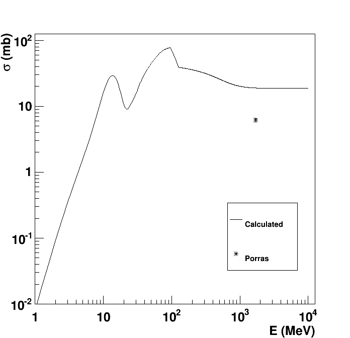
Cross-section of Sb-124 produced by protons on a natural Te target
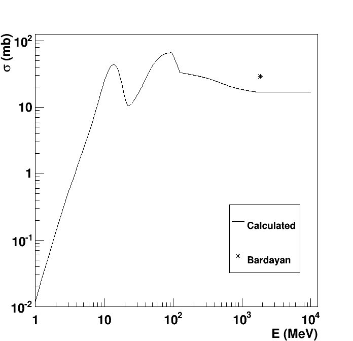
Cross-section of Sb-125 produced by protons on a natural Te target